Caratteristica: Pane rustico tostato con pomodori freschi a cubetti, aglio, basilico e olio extra vergine
di oliva —
completato con mozzarella cremosa per una ricchezza extra.
6€
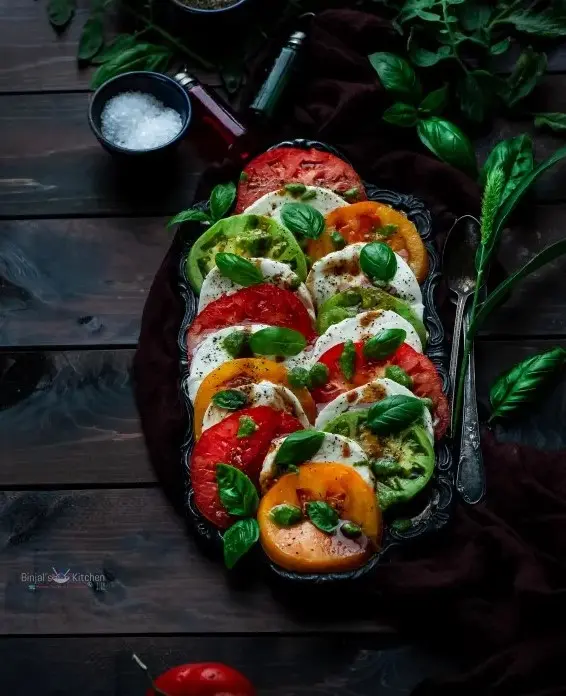
Caprese Salad
Tipo: Antipasto
Caratteristica: Un'insalata rinfrescante di mozzarella fresca, pomodori maturi e basilico — condita con
olio d'oliva e un
tocco di glassa al balsamico. Semplice, elegante e ricca di sapore.
7€
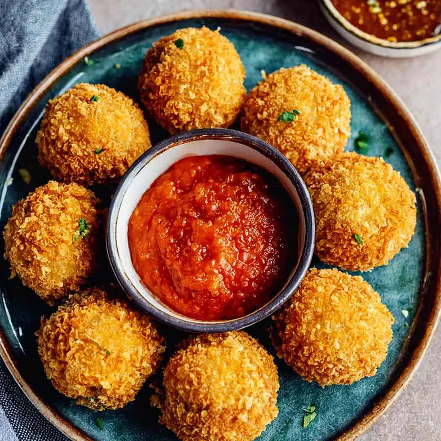
Arancini
Tipo: Antipasto
Caratteristica: Palline di risotto dorate e croccanti con un cuore fondente di formaggio o ricco ragù di
carne — croccanti
all'esterno, cremose all'interno.
6€
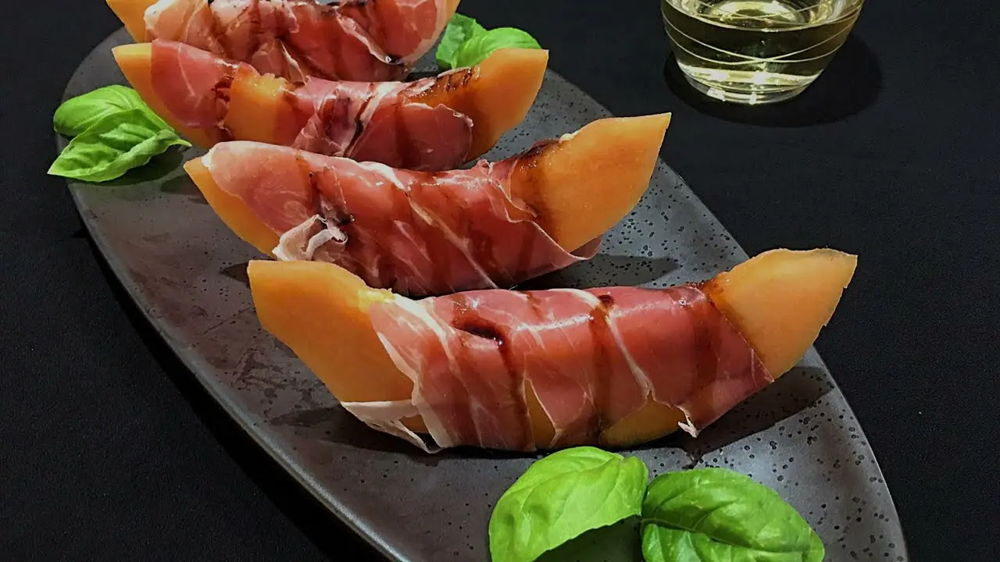
Prosciutto e Melone
Tipo: Antipasto
Caratteristica: Una combinazione classica di melone dolce e succoso accompagnato da prosciutto di Parma
sottilmente affettato —
un perfetto equilibrio di sapori.
8€
Primi Piatti
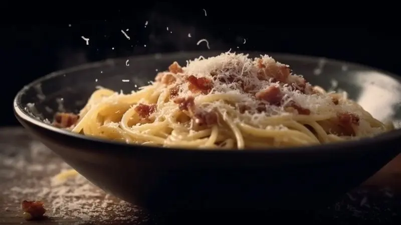
Spaghetti alla Carbonara
Tipo: Primo Piatto
Caratteristica: Spaghetti con pancetta croccante, uovo, formaggio pecorino e una generosa macinata di
pepe
nero — cremosi, saporiti e indulgenti.
10€
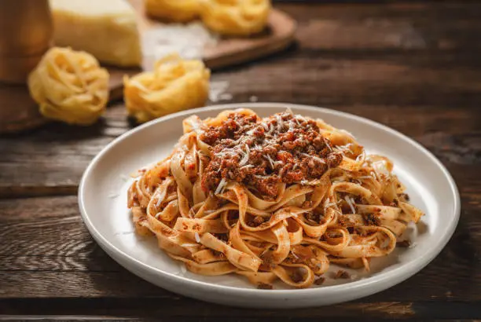
Tagliatelle al Ragù (Bolognese)
Tipo: Primo Piatto
Caratteristica: Pasta fresca all'uovo servita con un ricco ragù di carne cotto lentamente — un piatto
confortante e sostanzioso della tradizione bolognese.
12€
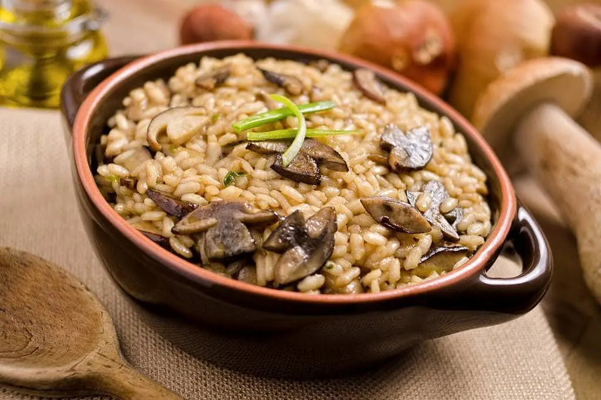
Risotto ai Funghi
Tipo: Primo Piatto
Caratteristica: Risotto cremoso preparato con funghi selvatici e rifinito con una generosa spolverata di
parmigiano — un piatto perfetto per l'autunno.
11€
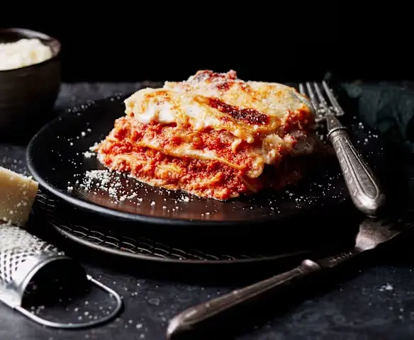
Lasagna alla Bolognese
Tipo: Primo Piatto
Caratteristica: Strati di pasta fresca, ragù di carne cotto lentamente, besciamella cremosa e formaggio
fuso —
cotto al forno per un piatto ricco e confortante.
13€
Secondi Piatti
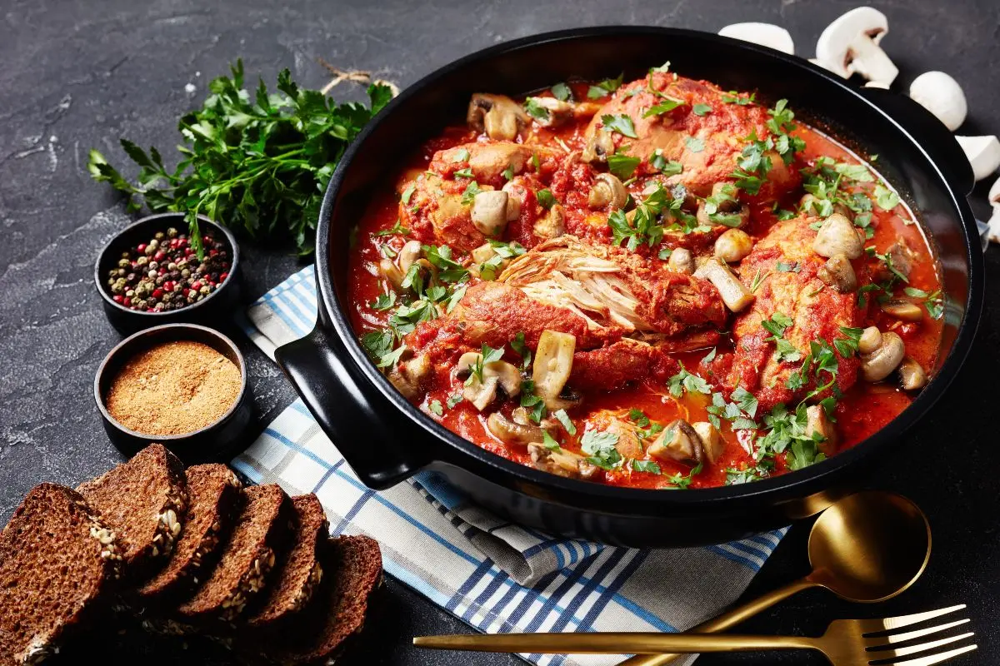
Pollo alla Cacciatora
Tipo: Secondo Piatto
Caratteristica: Pollo tenero stufato con pomodori, cipolle, olive ed erbe aromatiche — un piatto rustico
e ricco di sapore
tipico della Toscana.
14€
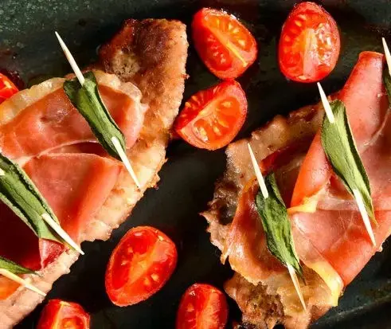
Saltimbocca alla Romana
Tipo: Secondo Piatto
Caratteristica: Sottili fettine di vitello con prosciutto e salvia, rosolate nel burro e nel vino bianco
— tenere, saporite
e ricche di carattere romano.
15€
Melanzane alla Parmigiana
Tipo: Secondo Piatto
Caratteristica: Strati di melanzane al forno con ricca salsa di pomodoro, mozzarella fusa e parmigiano
grattugiato — un
piatto classico vegetariano e confortante.
12€
Dolci
Tiramisu
Tipo: Dolce
Caratteristica: Un classico dolce italiano a strati con savoiardi inzuppati nel caffè, crema al
mascarpone e una
spolverata di cacao — ricco, cremoso e irresistibile.
6€
Panna Cotta
Tipo: Dolce
Caratteristica: Un dolce cremoso e setoso, leggermente dolcificato e servito con una guarnizione di
coulis di frutti di
bosco o caramello — delicato e rinfrescante.
5€
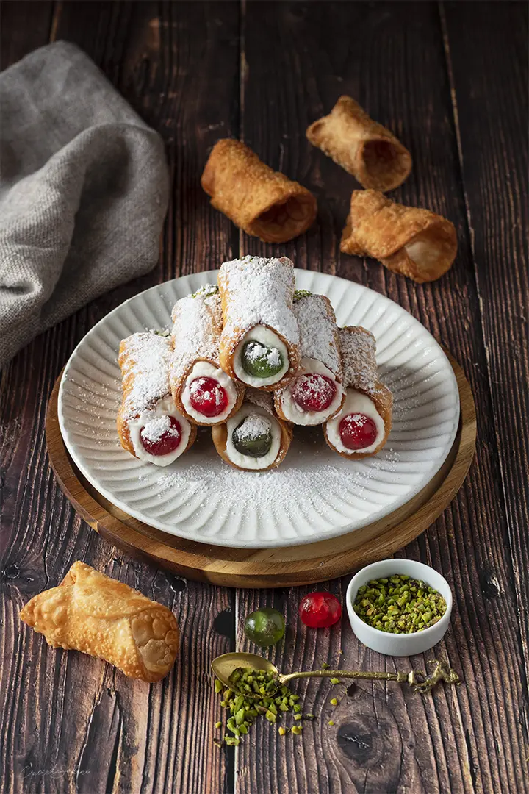
Cannoli Siciliani
Tipo: Dolce
Caratteristica: Tubetti di pasta croccante ripieni con crema di ricotta dolce, spesso arricchiti con
gocce di
cioccolato o frutta candita — una prelibatezza siciliana amata.
6€
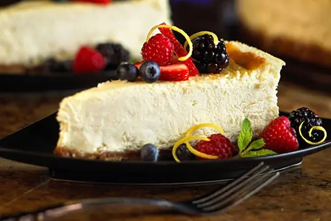
Cheesecake
Tipo: Dolce
Caratteristica: Cheesecake cotta, morbido e cremoso con una base di biscotto burroso — servito semplice o
guarnito con
frutta o salsa, è un classico senza tempo.